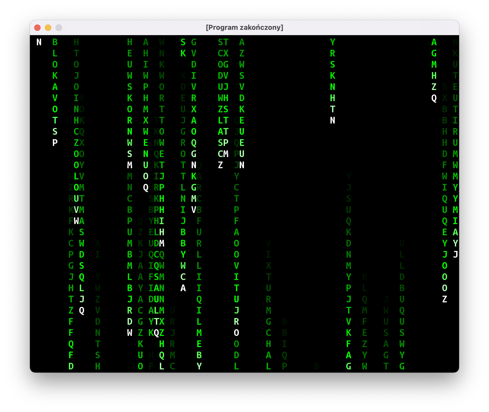

Sytuacja po poprzednich zajęciach
Pod koniec poprzednich zajęć nasz Biedamatrix prezentował się następująco:

Najbardziej paskudny bug w naszym programie nie jest widoczny na nieruchomym obrazku, ale działająca animacja “mruga”. Tym zajmiemy się w pierwszej kolejności.
Kolejne zmiany będą dotyczyły smug za literkami:
- Smugi nie powinny znikać, gdy litera doleci do dolnej krawędzi ekranu.
- Litery w smudze powinny stopniowo ściemniać się ku górze.
Bug nr 1: mruganie
Uproszczony kod naszego programu wygląda mniej-więcej tak:
do {
wyczyść ekran
dla każdej z 42 literek:
zmień kolor na biały
przesuń kursor
narysuj literkę na dole smugi
zmień kolor na zielony
powtórz 10 razy:
przesuń kursor
narysuj literkę w smudze
poczekaj 100ms
} while(true)
Każda instrukcja w powyższym pseudokodzie sprowadza się do wywołania funkcji print. Tak więc jeszcze bardziej uproszczony pseudokod wygląda następująco:
do {
wyczyść ekran (czyli print nr 1)
wypisz resztę (czyli pozostałe ~1000 printów)
poczekaj 100ms
} while(true)
Po każdym wywołaniu instrukcji print nasz program daje znać oknu terminala, że pojawiły się nowe rzeczy, które bardzo chciałby wyświetlić. Dzieje się to ok. 1000 razy w jednym przebiegu pętli, która wykonuje się 10 razy na sekundę. Sumarycznie, nasz program chciałby odświeżyć zawartość okienka ok. 10 tysięcy razy na sekundę.
Ekran waszego komputera nie jest w stanie tego obsłużyć. Standardowe ekrany potrafią pokazać 60 klatek na sekundę, czyli odświeżają obraz co ok. 16ms (bo 1000ms / 60 = 16.66(6)ms).
Dialog między ekranem komputera i naszym programem wygląda następująco:
Program: Popatrz! Popatrz! Patrz, jakie super rzeczy mam!
Ekran: …
Program: No weź, popatrz tylko!
Program: O, znowu coś mam! Wyświetlisz?
Ekran: Nie-e. Zajęty jestem…
Program: Szkoda. O, popatrz! Nowe rzeczy!
Po kilkunastu milisekundach
Program: Znowu coś mam! I znowu! O, znowu-znowu!
Ekran: No dobra, daj to…
Program: Dzięki, ty to fajny jesteś! A to mi wyświetlisz? A to? O, i to jeszcze?
Nie kontrolujemy tego, kiedy ekran będzie w stanie (albo będzie łaskaw) wyświetlić to, co da mu program. Czasami wydarzy się to po wypisaniu wszystkich liter, gdy program czeka na następny przebieg pętli w wywołaniu Thread.sleep(100), i wtedy wszystko wyświetli się poprawnie. Może się też zdarzyć tak, że ekran postanowi się odświeżyć tuż po print(Ansi.wyczyśćEkran()) i przez kolejnych 16ms będzie wyświetlony czarny ekran. To właśnie jest źródłem “mrugania”.
Nie jesteśmy (jeszcze…) w stanie dopasować się do częstotliwości odświeżania ekranu, ale możemy obejść ten problem w inny sposób: zamiast bombardować okno tysiącami printów, możemy każdą klatkę animacji najpierw przygotować, a dopiero później przekazać do wyświetlenia w jednym print.
Na początku pętli stworzymy pustą zmienną z tekstem, zamienimy wszystkie printy na dodawanie kolejnych elementów do tej zmiennej, i dopiero na samym końcu pętli wyświetlimy całą klatkę animacji printem:
do {
+ var kartka = ""
- print(Ansi.wyczyśćEkran())
+ kartka += Ansi.wyczyśćEkran()
for (litera in litery) {
if (litera.y > 0) {
// narysuj białą literkę
- print(Ansi.kolorCzcionki(Color.WHITE))
- print(Ansi.przesuńKursor(litera.x, litera.y))
- print(znaki.random())
+ kartka += Ansi.kolorCzcionki(Color.WHITE)
+ kartka += Ansi.przesuńKursor(litera.x, litera.y)
+ kartka += znaki.random()
// narysuj zieloną smugę
- print(Ansi.kolorCzcionki(Color.GREEN))
+ kartka += Ansi.kolorCzcionki(Color.GREEN)
for (dy in 1..DŁUGOŚĆ_SMUGI) {
val ySmugi = litera.y - dy
if (ySmugi > 0) {
- print(Ansi.przesuńKursor(litera.x, ySmugi))
- print(znaki.random())
+ kartka += Ansi.przesuńKursor(litera.x, ySmugi)
+ kartka += znaki.random()
}
}
}
litera.y += 1
if (litera.y > WYSOKOSC) {
litera.x = (1..SZEROKOSC).random()
litera.y = 1
}
}
+ print(kartka)
Thread.sleep(100)
} while (true)
Ta technika nazywana jest buforowaniem ramki i jest powszechnie stosowana w grach komputerowych.
Zmiana nr 2: przedwczesne znikanie
W obecnej wersji programu, literki “teleportują” się na górę ekranu, gdy tylko dotkną dolnej krawędzi. To zachowanie sprawia, że smuga, która była rysowana ponad tą literką, nagle zniknie, zamiast podążyć za literką poza dolną krawędź.
Najprostszym rozwiązaniem tego problemu będzie opóźnienie przenoszenia litery do momentu, gdy cała smuga znajdzie się poza ekranem, czyli gdy współrzędna y litery będzie większa niż (WYSOKOSC + DŁUGOŚĆ_SMUGI):
- if (litera.y > WYSOKOSC) {
+ if (litera.y > (WYSOKOSC + DŁUGOŚĆ_SMUGI)) {
litera.x = (1..SZEROKOSC).random()
litera.y = 1
}
Ta zmiana spowoduje pojawienie się innego efektu, który nie wygląda najlepiej: litery będą spadać “falami”, z dość dobrze zauważalną przerwą pomiędzy (jeśli nie widać tego efektu w waszym programie, możecie zwiększyć liczbę animowanych liter).
Chcemy, aby litery były mniej-więcej równomiernie rozsiane po ekranie. Można wylosować ich początkową pozycję z zakresu widocznego na ekranie:
+---------------------------+ ^
| a j d c | |
| A b J D c | |
| f b C | |
| f e B g | | WYSOKOŚĆ
| F e i g h | |
| E i G h | |
| I H | |
+---------------------------+ V
Chcieliśmy też, aby początkowo ekran był czarny, a litery pojawiały się stopniowo zza jego górnej krawędzi. Żeby to osiągnąć, losowaliśmy y z przedziału -WYSOKOŚĆ..-1:
^ -WYSOKOŚĆ
A J D |
C |
B |
F |
E G |
I H |
+---------------------------+ - 0
| | |
| | |
| | |
| | |
| | |
| | |
| | | WYSOKOŚĆ
+---------------------------+ V
Czyli przesunęliśmy obszar rysowania na ujemną połowę naszego układu współrzędnych. Gdy zmieniliśmy moment, w którym przenosimy literę na górę ekranu, zmieniliśmy też obszar rysowania: powiększyliśmy go o DŁUGOŚĆ_SMUGI linii:
+---------------------------+ - 0
| | |
| a j d | |
| a j d c | |
| A b J D c | |
| f b C | |
| f e B g | |
| F e i g h | - WYSOKOŚĆ
+---------------------------+ |
E i G h |
I H |
V WYSOKOŚĆ + DŁUGOŚĆ_SMUGI
Żeby zachować równomierny rozrzut liter, musimy tak samo poszerzyć obszar, na który będziemy je początkowo rozmieszczać:
for (i in 1..42) {
litery.add(
Litera(
x = (1..SZEROKOSC).random(),
- y = (-WYSOKOSC..-1).random()
+ y = (-(WYSOKOSC + DŁUGOSC_SMUGI)..-1).random()
)
)
}
Zmiana nr 3: paleta kolorów smugi
Spadająca literka powinna być narysowana na biało i pozostawiać za sobą zieloną, stopniowo ciemniejącą smugę. Obecnie nasza pętla rysująca smugę wygląda tak:
// narysuj zieloną smugę
kartka += Ansi.kolorCzcionki(Color.GREEN)
for (dy in 1..10) {
val ySmugi = litera.y - dy
if (ySmugi > 0) {
kartka += Ansi.przesuńKursor(litera.x, ySmugi)
kartka += znaki.random()
}
}
Skoro każda literka ma mieć inny kolor, powinniśmy przenieść zmianę koloru czcionki tuż przed dodawaniem do kartki znaczka. Kolor, którego użyjemy, będzie zależał od tego, którą literkę będziemy wypisywać. Możemy wykorzystać fakt, że jesteśmy wewnątrz pętli po przedziale 1..10, więc stała dy będzie wskazywać na to, którą literką właśnie się zajmujemy. Najprościej będzie przed główną pętlą animacji przygotować sobie paletę barw, czyli 10-elementową listę Color:
val kolory = mutableListOf<Color>()
for (i in 1..10) {
kolory.add(/* tym zajmiejmy się za chwilkę */)
}
Pamiętajcie, że listy indeksowane są od 0, a nasza stała dy będzie przybierać wartości z przedziału od 1..10! Wyciągając kolor dla elementu dy będziemy musieli poprosić o kolor pod indeksem dy - 1.
Po wszystkich zmianach nasza pętla rysująca smugę będzie wyglądać tak:
// narysuj zieloną smugę
for (dy in 1..10) {
val ySmugi = litera.y - dy
if (ySmugi > 0) {
kartka += Ansi.przesuńKursor(litera.x, ySmugi)
kartka += Ansi.kolorCzcionki(kolory[dy - 1])
kartka += znaki.random()
}
}
Ostatnią rzeczą, którą musimy zrobić, jest stworzenie palety kolorów, czyli dopisanie kodu w miejscu, gdzie teraz mamy komentarz /* tym zajmiejmy się za chwilkę */.
Zazwyczaj tworząc obiekty typu Color przy użyciu jego standardowego konstruktora, podawaliśmy składową czerwoną, zieloną, i niebieską. Nie jest to jedyny sposób, można też stworzyć Color funkcją Color.getHSBColor(…) podając jego barwę (Hue), nasycenie (Saturation) i jasność (Brightness).
Wszystkie wartości powinny być liczbami rzeczywistymi z przedziału 0..1. W Kotlinie liczby rzeczywiste to typ Float. Żeby stworzyć liczbę Float zamiast Inta, musimy do wartości dodać literkę f:
val liczbaCałkowita: Int = 1500
val liczbaRzeczywista: Float = 2900f
val trzyCzwarte: Float = 0.75f
W przypadku nasycenia i jasności można to interpretować jako procentową wartość: nasycenie 1f to w 100% jaskrawa barwa; nasycenie 0.4f to inaczej 40% nasycenia, czyli bardziej pastelowy kolor.
Barwa też jest liczbą od 0f do 1f, przy czym jej zachowanie może być trochę zaskakujące. Wartość 0f odpowiada kolorowi czerwonemu. Większe wartości odpowiadają kolejnym kolorom tęczy: 0.16f to będzie kolor żółty, 0.33f to kolor zielony, 0.66f to niebieski, 0.82f to fioletowy itd. Wartości pomiędzy oczywiście też można używać, na przykład przedział pomiędzy 0f a 0.16f to różne odcienie pomarańczowego.
Myślę, że najlepiej będzie pokazać przy użyciu krótkiego programu testowego, który pokazuje całą paletę jaskrawych barw, zaczynając od czerwonego 0f po lewej stronie.
fun main() = terminal(
widthInTiles = 60,
heightInTiles = 1,
) {
for (i in 1..60) {
val kolor = Color.getHSBColor(
(i - 1).toFloat() / 60f,
1f,
1f
)
print(Ansi.kolorCzcionki(kolor))
print("#")
}
}

Wracając do naszego Matrixa: chcemy stworzyć paletę zielonych, stopniowo ciemniejących kolorów. Zamiast żonglować wartościami RGB, możemy użyć modelu HSB. Litery mają być zielone (h = 0.33f) i nasycone (s = 1f), natomiast ich jasność ma stopniowo maleć do zera:
val kolory = mutableListOf<Color>()
for (i in 1..10) {
val b = 1f - (i - 1) * 0.1f
kolory.add(Color.getHSBColor(0.33f, 1f, b))
}
Podsumowanie
Uff, dobrnęliśmy do końca. Po wszystkich zmianach nasz Matrix prezentuje się znacznie lepiej: nic nie mruga, nie ma glitchy, smugi ładnie zanikają. To już nie Biedamatrix, ale… Trochęmatrix?

Na następnych zajęciach zostawimy Matrixa w spokoju i zajmiemy się kolejną animacją pt.: “Doom Fire”, czyli będziemy podpalać ekrany naszych komputerów.